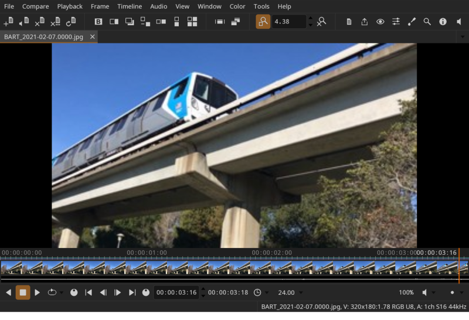

DJV
DJV is an open source application for media playback and review. It plays back high-resolution image sequences and movies in real time, with audio, A/B comparison, color management, and more.
Features include:
- High-resolution and high bit-depth image support
- A/B comparison with wipe, overlay, difference, and tile modes
- Timeline support with OpenTimelineIO, including bundles and proxy/full resolution switching with media references
- Color management with OpenColorIO
- Multi-track audio with variable-speed and reverse playback
- Export images, image sequences, and movies with audio
- Command line automation
- Experimental USD support
- Available for Linux, macOS, and Windows

Use the navigation on the left to browse the documentation, or the search box at the top to jump straight to a topic.